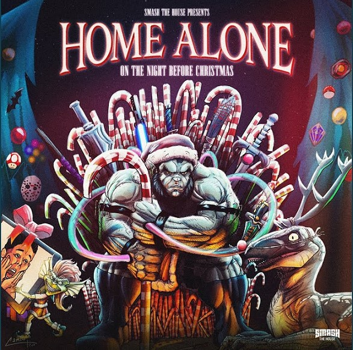

El dia de hoy 17 de noviembre en su cuenta de Instagram los DJs y productores Dimitri Vegas & Like Mike anunciaron el lanzamiento del que se supone sera un album colaborativo navideño, el cual tiene como nombre: Home Alone, este
contara con colaboraciones de los tambien dj´s Armin Van Buuren, Bassjackers, Blasterjaxx, Coone, Ummet Ozcan, Brennan Heart y varios mas; El lanzamiento oficial de este album esta previsto para finales de noviembre.
Asi que no tendremos que esperar tanto tiempo ya que en este momento pueden escucharlo completo, solamente den un clic a la portada posterior.
